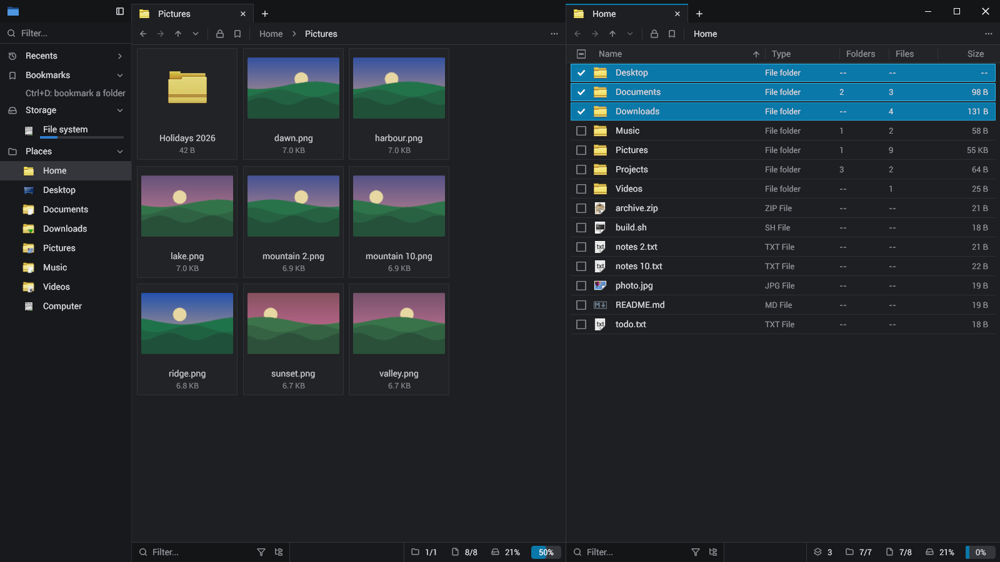
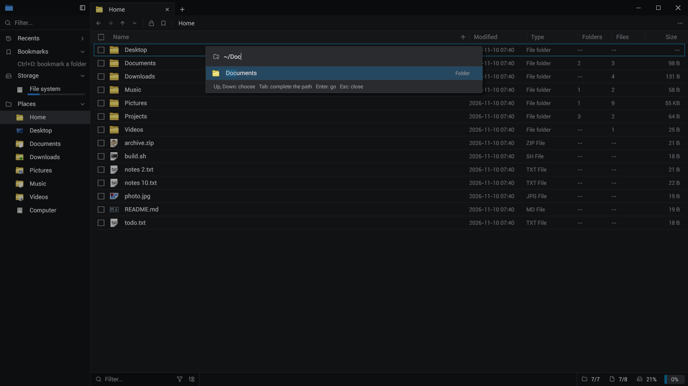
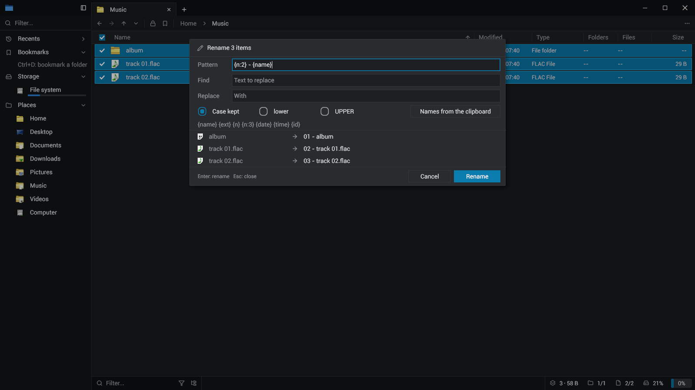
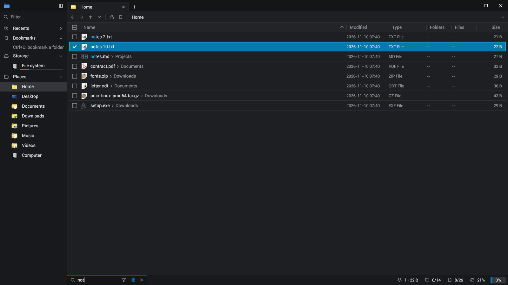
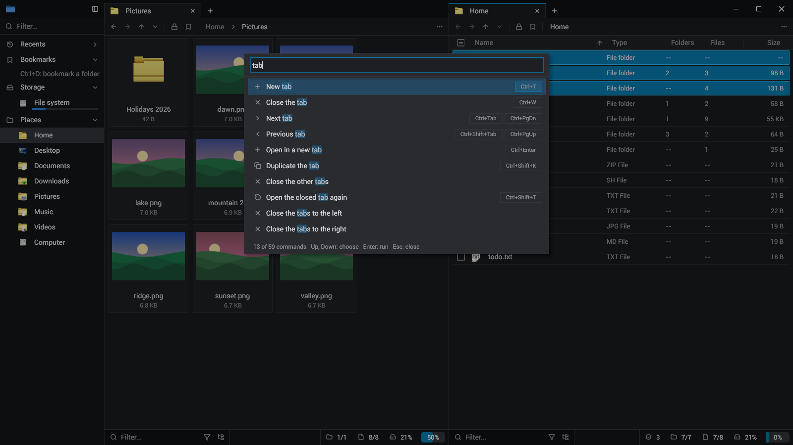
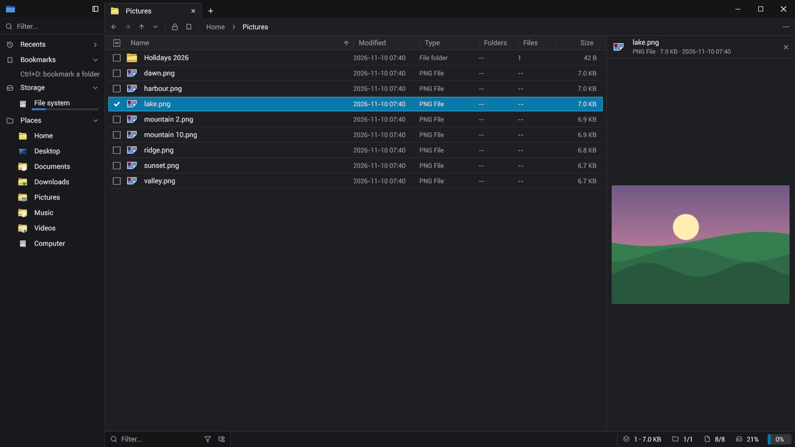
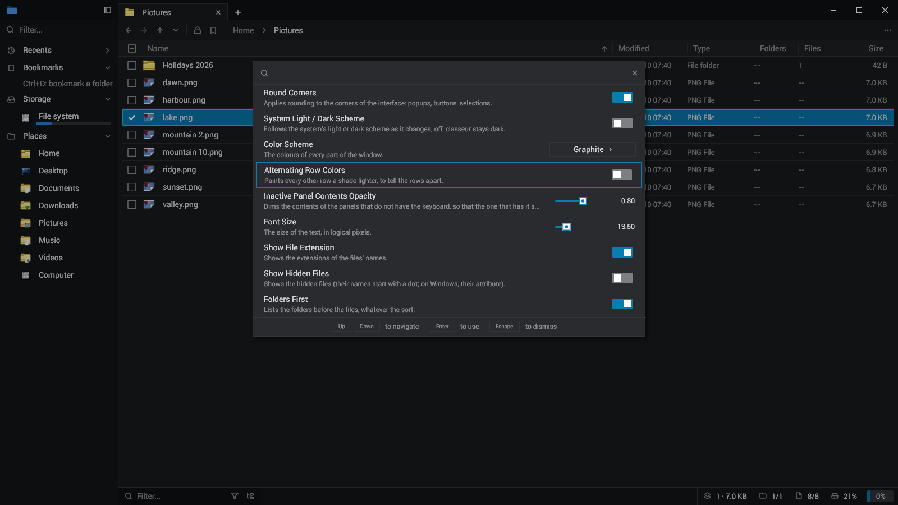

Tabs in panels
Each panel its tabs; Ctrl+Shift+D splits, F6 goes to the next. Drag a tab along its row, to another panel, or to a panel's right edge for a new one. The session comes back at the next start.
A fast, keyboard-first file manager for Linux and Windows.
· With Nix: nix run github:sachahjkl/classeur · MIT
Plainly: classeur is a clean-room reimplementation, strongly inspired by File Pilot. File Pilot is a closed-source file manager for Windows; we have no access to its code, and none of it is in classeur. What classeur copies is what anyone can see: its layout, its keys, its behaviour, studied from its site, its release notes and its use.
It exists because Linux has, to my mind, no good native and fast file manager: one that opens a folder of 100 000 files without a wait, does everything from the keyboard, and stays out of the way. classeur tries to fill that gap. It builds for Windows too, but Linux is the reason.
classeur is not affiliated with File Pilot or its authors. On Windows, the original is File Pilot.

Each panel its tabs; Ctrl+Shift+D splits, F6 goes to the next. Drag a tab along its row, to another panel, or to a panel's right edge for a new one. The session comes back at the next start.
Folders are read on worker threads and only the rows in view are built. Every folder shown is measured all the way down, and watched: a change made by any program shows at once.
Ctrl+F filters the folder by a few letters, in order. Ctrl+Shift+F searches every folder below. The types' popup keeps files or folders alone, or some extensions.
Ctrl+G: a path with its folders completed as you type (Tab completes), or a few letters of a recent folder, a bookmark or a place.
Ctrl+K: every action of the program, found by a few letters, with its keys. The menus are searched by typing too.
F2 on several items: a pattern with numbers, dates and ids, a find and replace, the case, or the names from the clipboard, each new name shown before anything moves.
Ctrl+Z puts back a rename, a new folder or file, a copy, a move, the trash; Ctrl+Y does it again. What an undo removes goes to the trash, never away for good.
Rows out to any program as files; files from anywhere onto a folder, a list, a tab or the sidebar. A move on one volume, a copy across volumes; Ctrl copies, Shift moves.
The icons are your desktop's icon theme (the shell's on Windows). The inspector (Space) shows a picture, a text or a folder beside the list.






One program for Linux x64. Unpack it and run ./classeur install: the launcher in the applications
menu, its icons, classeur on your PATH. Needs Vulkan and fontconfig; librsvg for the SVG icons.
classeur-{{version}}-linux-x64.tar.gz
The flake builds classeur from source with everything it needs (Vulkan, fontconfig, librsvg for the SVG icons).
nix run github:sachahjkl/classeur
With Odin (the version in odin.version), git and cargo: clone with its submodule, then build.
git clone --recursive https://github.com/sachahjkl/classeur && cd classeur && ./build.sh
One program for Windows 10 and 11 (x64): its Setup installs it for you. It uses the shell's icons, the Recycle Bin and the clipboard's files there; it is built and tested by the release, not yet tried by hand.
classeur-{{version}}-windows-x64.zip
Every key is in the command palette (Ctrl+K, or the "…" menu). The README says the rest.